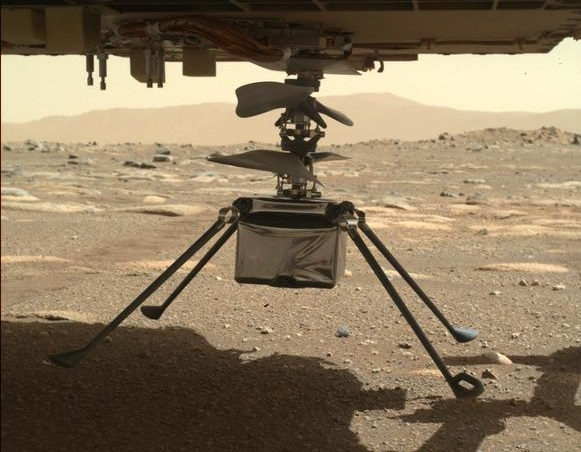

How does COVID-19 spread?
The virus can also spread after infected people sneeze, cough on, or touch surfaces, or objects, such as tables, doorknobs and handrails. Other people may become infected by touching these contaminated surfaces, then touching their eyes, noses or mouths without having cleaned their hands first.
Click on the link for moreMars helicopter first flight: Nasa to test Ingenuity
This small helicopter is set to be the first to fly on another planet.Ingenuity is a 1.8kg (4lb) helicopter that travelled to Mars inside Nasa's Perseverance rover, which landed in February 2021.Nasa say it's now aiming to test it on Monday 19 April but admits it may not be successful, in which case they'll try again later in the week.Flying on the Red Planet isn't straightforward - as BBC science reporter Laura Foster and Nasa systems engineer Farah Alibay explain.
A68: Iceberg that became a social media star melts away
The iceberg that was for a time the biggest in the world is no more.A68, as it was known, covered an area of nearly 6,000 sq km (2,300 sq miles) when it broke away from Antarctica in 2017.That's like a small country; it's equal to a quarter of the size of Wales.But satellites show the mega-berg has now virtually gone, broken into countless small fragments that the US National Ice Center says are no longer worth tracking.